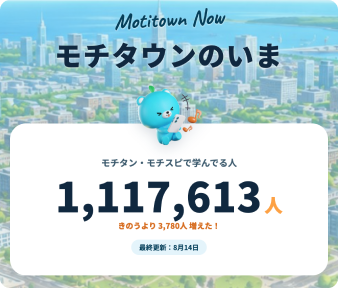
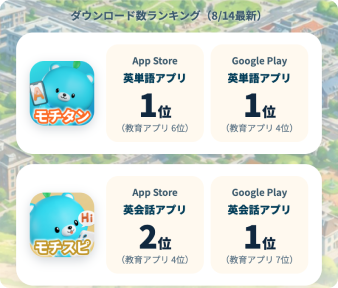
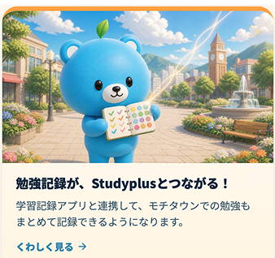
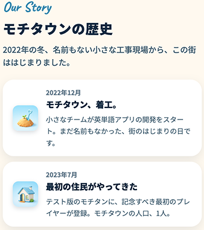
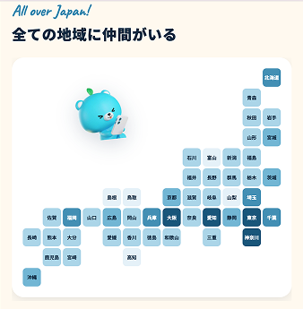
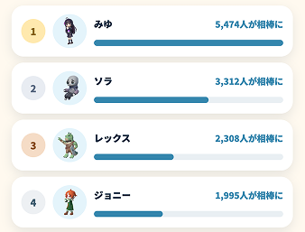
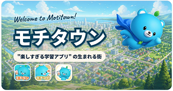

モチタウンのいま
2026/8/14 18:00
モチタン・モチスピの「いま」がわかるページを作ったよ！
アプデ予定、楽しいデータ、歴史、人気のコース、人気のキャラ、混んでる時間帯などなど、みんなの気になる情報を、毎日更新。
少しだけ内容を紹介するね！
モチタウン、盛り上がってる！
まずはモチタウンの人口から。毎日こんなにも、みんなの仲間が増え続けているんだ。

つぎにダウンロード数ランキング！タップすると、各ストアのランキングに飛ぶよ。

アプデ予定は、次に追加される機能を先取り。もうすぐStudyPlusとつながるんだって！

ほかにも、たくさんの楽しい機能の予定があるから、ぜひサイトをチェックしてね。
モチタウンのいろいろ
いまでこそモチタウンはにぎわっているけど、その道のりにはいろんなことがあったよ。
ユーザーがひとりしかいなかった時代からの成長の歴史や、

日本中のモチタウン仲間のこと、

みんなが使っているキャラの人気度も！

もっともっとモチタウンのことを知ることができるよ。ぜひ、ぼくと一緒にモチタウンを見て回ろう。サイトで待ってるよ。

＜画像をタップしてサイトへ＞